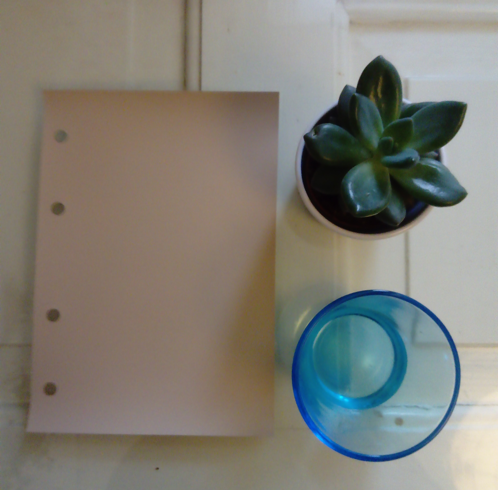

| Onko työkaverisi tai ystäväsi innokkaita sisustajia? Oletko miettinyt jotain uutta työpaikan tykypäivään tai kavereiden kanssa vietettävään iltaan? Järjestän erilaisia sisustusiltoja ja luentoja tykypäiville ja kavereiden illanistujaisiin. Illat suunnitellaan vastaamaan juuri teidän tarpeitanne. Ilta voi koostua luennosta, neuvoista osallistujien konkreettisiin sisustusongelmakohtiin tai jostain toiminnallisesta tapahtumasta. |  |
Kysy lisää niin suunnitellaan juuri teidän tarpeisiinne sopiva kurssi, luento tai toiminnallinen tapahtuma. Olen toiminut sisustussuunnittelijana vuodesta 2005. Olen Sisustussuunnittelijat SI Ry:n jäsen, joka on valtakunnallinen kouluttautuneiden sisustussuunnittelijoiden yhdistys. Ammattitaitoisen suunnitteijan tunnistat nimikkeen perässä olevasta SI-lyhenteestä.
Erika Rentola-Björklund Sisustussuunnitelija SI
| www.erb.fi | p. 040-5629741 | erika@erb.fi |